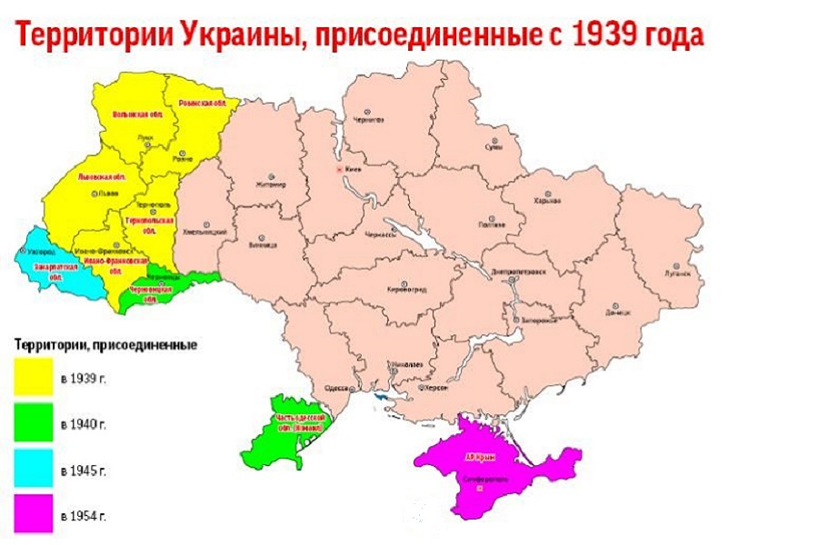

ENGLISH РУССКИЙ
ENGLISH РУССКИЙ
ENGLISH РУССКИЙ
ENGLISH РУССКИЙ
ENGLISH РУССКИЙ
ENGLISH РУССКИЙ
Ukrainian SSR
Ukrainian Soviet Socialist Republic (Ukrainian SSR, Ukrainian SSR [1]; Ukrainian Ukrainian Radianska Socialist Republic, URSR, Ukrainian RSR) is a socialist Ukrainian state, proclaimed on the part of the territory of the former Russian Empire on March 10, 1919; one of the founding states of the USSR, since 1922 it has been a union republic.
The Ukrainian SSR was proclaimed on March 10, 1919 (as a successor to the Bolshevik UNRS, proclaimed on December 25, 1917 and legally existed until March 1918). After the end of the Civil War, she became a co-founder of the USSR on December 30, 1922 and became a part of it as a union republic. In 1939-1940, the territory of the Ukrainian SSR was increased due to the annexation of Western Ukraine and Northern Bukovina, in 1945 - Transcarpathian Ukraine, in 1954 - Crimea.
It was located in the southwest of the European part of the USSR. After the Great Patriotic War in the west and south-west of the Ukrainian SSR, the state border of the USSR with the socialist countries passed: Poland, Czechoslovakia, Hungary, Romania. In the north, it bordered on the Byelorussian SSR, in the east and north-east - with the RSFSR, in the south-west - with the Moldavian SSR. In the south, the territory of the Ukrainian SSR was washed by the waters of the Black and Azov Seas. The Ukrainian SSR was the third in terms of area after the RSFSR and the Kazakh SSR, and the second most populous republic of the USSR after the RSFSR. Area - 603.7 thousand km2. Population - 49.1 million people. (as of January 1, 1976). The capital is Kiev.
Before the adoption of the Constitution of the USSR in 1936, the Ukrainian Socialist Soviet Republic was officially called.
On August 24, 1991, the Supreme Soviet of the Ukrainian SSR adopted the Act of Declaration of Independence and the resolution "On the Declaration of Independence of Ukraine." These documents proclaimed the independence of Ukraine and the creation of an independent Ukrainian state. In accordance with the act, the territory of Ukraine is indivisible and inviolable and from now on exclusively the Constitution and laws of Ukraine operate on its territory. The declaration of independence was confirmed in a referendum on December 1, 1991.
Map of the Ukrainian SSR since 1934
[BACK TO HOME] [BACK TO THE REPUBLICS]